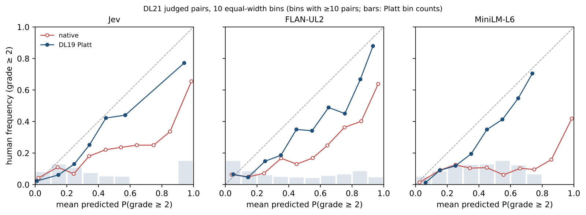
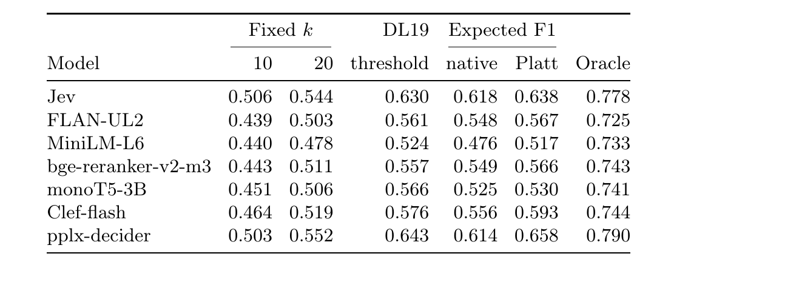

目录 · 7 节
1从打分到切篇数的五步2决策模型排得更好，分级标签的收益几乎消失3模型报九成以上时，人工只判了约三分之二相关4为什么两个参数就能修掉大半5校准之后，剩下的差距来自区分能力6换到新领域，log loss 下降，Brier 有升有降7用期望 F1 给每个问题定篇数排序排得好，不等于模型报出的相关概率可信；这篇论文拿 TREC 的人工相关判断检验 LLM 和 cross-encoder 报出的概率，发现偏差用两个参数就能修掉大半，修好的概率还能决定每个问题该返回几篇文档。
以一个先检索、再重排、再切出前几篇的 RAG 流程为例（示意），每次请求都要做两件事。举一个示意的问题：用户问「飞机窗户为什么是圆的」，系统先用 BM25 取 100 篇候选，reranker 给每篇打分排序，然后切出前几篇交给 LLM。排序决定 LLM 先读到谁，切多少篇决定 LLM 要读多少。每多传一篇都要花 context token，不相关的段落还可能干扰 LLM 的回答。
难点在切多少篇。排序分数只告诉系统 A 排在 B 前面，却不告诉系统排第 4 的那篇值不值得带上。假设窗户这个问题的候选里只有 3 篇真正回答了窗户形状，另一个问题有 30 篇相关（示意）。固定取前 10 时，窗户问题至少多传 7 篇不相关的段落，另一个问题至少漏掉 20 篇。要按问题决定篇数，系统需要一个绝对的数：这一篇相关的概率是多少。有了它，系统才能估计多带一篇，是多一篇有用的还是多一篇噪声。
论文比较的两种基线是固定取前 k，以及用一批人工标注数据拟合一个概率阈值。固定深度不看相关概率；阈值基线用到了概率，但所有问题共用一个全局阈值，而且要靠标注数据拟合。要按每个问题定篇数，前提是相关概率本身可信。2026 年 9 月发布的 Jev 看起来能提供这样的概率。Jev 是一种决策模型（decision model）：调用方给它一道判断题、几个相关等级和一段内容（这里是用户的 query 加一篇候选文档），它不生成文本，直接对每个等级返回一个概率，几个高等级的概率相加就是这篇文档的相关概率。它的厂商 TypeSafe 承诺这些概率是校准的，也就是说，模型报相关概率 80% 的 100 篇文档里，应该有约 80 篇真的相关。
Jev 和同类开源模型发布几周内，就被拿去做 reranker、RAG 证据筛选和事实核验，这些用法都直接按概率做决定。可是已有的独立校准检查，一篇做的是文本分类，一篇用的是二值标签，都没有拿这个概率和分级的人工相关判断比过。放回窗户的例子：假如 Jev 给排第 4 的段落报 0.5，nDCG 只关心它排在第 5 篇前面，回答不了这个 0.5 能不能信。
这篇论文接着一篇旧工作 Beyond Yes and No 往下做。那篇工作让 LLM 给文档选相关等级，用模型给各等级的概率（似然）算一个期望相关度当排序分数，并把「这些分数和人工判断对不对得上」留作未来工作。作者先复现它的排序结论，再用 TREC Deep Learning 评测的人工标注检验概率本身。这批数据按年份分成 DL19（2019 年的标注）、DL20（2020 年的标注）和 DL21（2021 年的标注）。结果是，Jev 在 DL21 上报 0.9 以上的「query-文档」配对，人工只判了 66% 相关。用 DL19 的 2,257 个配对拟合两个参数（一个斜率、一个截距）后，按修正后的概率切篇数，Jev 的平均 F1 从固定取前 10 的 0.506 升到 0.638。
从打分到切篇数的五步
下面一直用飞机窗户这个问题。整条链路是这样走的：
| 步骤 | 输入 | 操作 | 产出 | 只在拟合时做吗 |
|---|---|---|---|---|
| 取候选 | query | BM25 取前 100 篇 | 候选文档 | 否 |
| 打分 | query、一篇文档、四个相关等级 | 决策模型对四个等级各返回一个概率 | 后两级相加，得到这一篇的原生概率 | 否 |
| 拟合校准 | DL19 的原生概率和人工标签 | 用最大似然拟合两个参数 | a 和 b | 是，只做一次 |
| 校准 | 原生概率、a、b | 过一个单调映射 | 校准后概率，文档顺序不变 | 否 |
| 切篇数 | 排好序的校准后概率 | 找让期望 F1 最大的深度 | 这个问题返回 k 篇 | 否 |
打分这一步的中间产物长这样（示意）：
问题：判断这段文字回答 query 的程度
等级：Irrelevant / Related / Highly relevant / Perfectly relevant
内容：query=飞机窗户为什么是圆的；passage=早期客机用方形舷窗，机舱增压后窗角应力集中……
返回：Irrelevant 0.01，Related 0.09，Highly relevant 0.40，Perfectly relevant 0.50这四个等级是 TREC 评估员打分用的定义，Related 指文档看着相关、却没有回答问题。论文把人工等级达到后两级的配对算作相关，所以这一段的原生概率就是 0.40 + 0.50 = 0.90。原生概率指模型直接报出来、还没有经过任何修正的概率。cross-encoder 没有等级分布，它的原生概率是输出 logit 过 sigmoid。
决策模型排得更好，分级标签的收益几乎消失
检验概率之前，作者先确认这些模型确实排得好。任务是在 8 个 BEIR 数据集上重排 BM25 前 100 篇，指标是 nDCG@10。
作者先用开源 LLM FLAN-UL2 复现旧工作。三条结论的方向都成立：分级标签好于「相关 / 不相关」两级标签，用似然打分好于直接解析模型生成的标签，等级超过三四个以后收益变平。绝对分数平均低了 0.005 到 0.024，把每篇文档读入的截断长度从 256 放到 512 token 重跑，也没有补上。这说明旧工作的趋势站得住，它报的绝对分数这次没有复现出来。
同样的候选上，用三个相关等级提问时，Jev 的平均 nDCG@10 是 0.520，比 FLAN-UL2 高 0.046。它比 cross-encoder MiniLM 和 bge 分别高 0.050 和 0.034，比最强的 cross-encoder monoT5-3B 只高 0.014，而且只在 8 个数据集中的 4 个上领先。开源的 27B 决策模型 pplx-decider 是 0.548，8 个数据集都高于 Jev；开源的 9B 决策模型 Clef-flash 是 0.502。这说明排序领先的是 Jev 和 pplx-decider 这两个决策模型，开源模型也能排在 Jev 前面，9B 的 Clef-flash 则和 monoT5-3B 差不多。
「分级标签好于两级标签」这条结论，到决策模型这里几乎消失了。把相关等级从两级加到三级，FLAN-UL2 的 nDCG@10 涨 0.038，Clef-flash 和 pplx-decider 只涨约 0.006，Jev 还跌了 0.008。Jev 这点跌幅和同分的处理方式有关：它的概率只有两位小数，很多文档同分，同分时不按 BM25 顺序而是随机排，跌 0.008 就变成涨 0.011。这说明对决策模型来说，多加等级带来的收益很小，方向还随模型变化。
模型报九成以上时，人工只判了约三分之二相关
排序这一关过了，下面检验概率本身。作者只用 TREC 评估员明确判过的配对，DL19、DL20、DL21 分别有 2,257、2,859、2,786 对，没判过的配对没有人工标签，不进入分析。DL19 专门用来拟合，DL20 和 DL19 语料相同，DL21 既是新的一年，也换了新语料 MS MARCO v2。
图 1 的读法很简单：把 DL21 的配对按模型报的概率分进十个箱，横轴是模型报的概率，纵轴是每个箱里人工判相关的实际比例。校准良好的模型报多少、实际就有多少，曲线应该落在对角线上。

三个模型的原生曲线都明显低于对角线，也就是实际相关的比例低于模型报的概率，说明它们都报得过高。Jev 报 0.9 以上的配对，人工只判 66% 相关，FLAN-UL2 是 64%，MiniLM 是 42%。这说明按 TREC 人工判断来算，Jev 的校准承诺并不成立，其他模型的原生概率同样不能直接当相关概率用。
Jev 还多一个问题：它是唯一会返回恰好 0 或 1 的模型。DL21 的 2,786 对里有 1,006 对拿到这种极端值，其中 158 对和人工判断相反。这种错误在 log loss 上代价极大。示意：一个配对人工判不相关，模型报 0.9，log loss 是 −ln(1 − 0.9) = −ln(0.1)，约 2.3；模型报 1 时，论文把概率截断到 1−10⁻⁶，log loss 是 −ln(10⁻⁶)，约 13.8。
所以 Jev 的原生 log loss 是 1.315，比 FLAN-UL2 的 0.783 差，尽管 Jev 的 Brier 和 AUC 都略好于 FLAN-UL2（差别不显著）。这说明同一个模型在不同的概率指标上可以排出相反的名次，会直接按概率做决定的系统要特别留意 0 和 1 这两个值。
为什么两个参数就能修掉大半
原生概率报得太高，一种可能是模型排序其实没坏，只是数值整体偏高。如果是这样，就不必换模型或重新训练，在模型后面接一个小映射就够了。作者用的是 Platt scaling：先把原生概率截断到 [10⁻⁶, 1−10⁻⁶]（这样恰好 0 或 1 的值也能取 logit），再转成 logit，乘一个正的斜率、加一个截距，再转回概率：
是原生概率， 是校准后概率， 是 sigmoid。斜率 决定把概率拉开还是往中间收，截距 决定把所有概率整体上移还是下移。斜率为正时这个映射单调，所以文档顺序完全不变；只在 DL19 上用最大似然拟合一次，之后原样用到 DL20 和 DL21。
为什么要两个参数，一个截距不够吗？示意：logit(0.9) 约 2.2，logit(0.1) 约 −2.2。假设要把 0.9 修到 0.7 左右（logit 约 0.84），同时报 0.1 的这一档本来就大致准。只用截距要减 1.36，0.1 的 logit 就掉到 −3.56，概率变成约 0.03，被压得过低。
取 、（示意值），0.9 变成约 0.70，0.1 仍然约 0.10。这个小例子说明，斜率让高概率段和低概率段可以分别被修正，这是单个截距做不到的。
把这两个示意值用到窗户问题的 5 篇候选上：
| 段落（示意） | 原生概率 | 校准后概率 | 人工等级 |
|---|---|---|---|
| A：解释圆角如何分散机舱增压应力 | 0.99 | 0.93 | Perfectly relevant |
| B：早期方窗客机失事后为何改用圆窗 | 0.99 | 0.93 | Perfectly relevant |
| C：方形舷窗在增压下窗角应力集中 | 0.90 | 0.70 | Highly relevant |
| D：舷窗的三层玻璃结构 | 0.50 | 0.33 | Related |
| E：家装圆窗选购指南 | 0.10 | 0.10 | Irrelevant |
顺序没有变，变的是数值。D 这段看着相关却没有回答问题，按 TREC 的口径算不相关，这一点到切篇数时会用上。
真实结果分四个指标看，下表都是 DL21 上的数。Brier 是概率和 0/1 标签的均方差，示意：报 0.9 时，人工判相关贡献 0.01，判不相关贡献 0.81。ECE 把预测分进十个箱，平均每个箱里预测均值和实际比例的差距。AUC 是随机抽一个相关配对和一个不相关配对，相关的分数更高的概率，它只看顺序，校准改变不了。Brier、log loss、ECE 都是越低越好，AUC 越高越好。
| 模型 | Brier（原生→校准） | Log loss（原生→校准） | ECE（原生→校准） | AUC |
|---|---|---|---|---|
| FLAN-UL2 | 0.237→0.171 | 0.783→0.514 | 0.248→0.124 | 0.831 |
| MiniLM | 0.476→0.188 | 2.373→0.554 | 0.503→0.108 | 0.766 |
| bge | 0.280→0.177 | 0.984→0.523 | 0.291→0.121 | 0.811 |
| monoT5-3B | 0.327→0.193 | 1.160→0.557 | 0.359→0.177 | 0.823 |
| Jev | 0.213→0.147 | 1.315→0.478 | 0.211→0.100 | 0.861 |
| Clef-flash | 0.202→0.172 | 0.596→0.519 | 0.212→0.115 | 0.836 |
| pplx-decider | 0.192→0.144 | 0.611→0.447 | 0.212→0.094 | 0.878 |
所有模型的三项误差在 DL21 上都下降了，DL20 上也一样。这说明只用 2,257 对拟合的两个参数，换到新的一年和新语料上仍然有效。修正并不彻底：图 1 里校准后的曲线在高概率段仍略低于对角线。
Jev 对每个问题只请求一次 API，表里 Jev 的数都来自这一次结果。为了检查一次够不够，作者对 DL21 的 300 对又重发了三次，Brier 最多变 0.004，比大多数模型之间的差距小。这说明 API 单次请求的波动不足以解释表里的大部分差距。
措辞实验进一步说明误差主要在数值尺度上。把评估员式的问法换成旧工作的两级问法，Jev 的原生 Brier 从 0.213 涨到 0.322。各自在 DL19 上拟合校准后，两种问法是 0.147 和 0.156，AUC 也接近。另外六种问法的原生 Brier 在 0.196 到 0.308 之间，校准后比评估员问法最多高 0.006。这说明换问法主要改变报出来的数值大小，校准能把这部分差别基本抹平。
校准之后，剩下的差距来自区分能力
同样校准之后，Jev 在 DL21 上的 Brier 比 FLAN-UL2 低 0.023，比 bge 低 0.030，比 monoT5-3B 低 0.046。这个对 cross-encoder 的优势只在 DL21 上成立，DL20 上 bge 和 Jev 只差 0.005，差异不显著。所以这里能说的是 Jev 在这一年的留出数据上更好，还不能说它总比 cross-encoder 好。
开源模型的情况分两头。27B 的 pplx-decider 校准后 Brier 是 0.144，和 Jev 的 0.147 没有显著差别。9B 的 Clef-flash 在 DL20 上和 Jev 持平（0.119 对 0.123），到 DL21 掉到了 FLAN-UL2 的水平（0.172 对 0.171）。这说明开源的 27B 模型能拿到和 Jev 同样水平的校准后概率，9B 的 Clef-flash 换到新语料时没有保住。
差距从哪来，要把 ECE 和 AUC 分开看。校准后，除 monoT5-3B 的 0.177 外，各模型 ECE 都在 0.094 到 0.124 之间，数值的准确度相差不大。AUC 还留着原来的差距，MiniLM 0.766，Jev 0.861，pplx-decider 0.878。AUC 最高的两个模型，校准后 Brier 也最好。
校准把各模型的数值修到差不多的水平后，剩下的优势主要来自谁更能区分相关和不相关的配对。
换到新领域，log loss 下降，Brier 有升有降
作者把 DL19 拟合的参数原样用到四个 BEIR 数据集上，这些数据集的等级定义和 TREC 不同，相关的门槛换成人工等级不低于 1。Jev 的 log loss 平均从 1.044 降到 0.654，在四个数据集上都下降，三个 cross-encoder（MiniLM、bge、monoT5-3B）也都下降。
Brier 就不一样了。Jev 在 TREC-NEWS 和 Robust04 上变好，在 TREC-COVID 和 DBPedia-Entity 上变差，四个数据集的平均 Brier 从 0.197 升到 0.214。FLAN-UL2 用 TREC 评估员式的问法时，原生概率本来就不怎么偏高，加上映射后四个数据集的 Brier 全部变差。
TREC-COVID 上情况最差，除 monoT5-3B 外，所有模型的 Brier 都被这组参数抬高了。这说明 DL19 上学到的 a 和 b 换到新领域后，能降低 Jev 和 cross-encoder 的 log loss，却不保证 Brier 也下降。
用期望 F1 给每个问题定篇数
现在回到开头的问题：窗户这个问题该传几篇给 LLM。F1 的定义是 ， 是返回的 篇里相关的篇数， 是这个问题的候选里全部相关的篇数。线上这两个数都不知道，但校准后的概率能估它们的期望：一篇的相关概率就是它算一篇命中的期望，所以前 篇的概率之和是期望命中数，全部候选的概率之和是期望相关总数。把这两个期望值直接代入 F1 公式，得到切篇数的规则。论文称之为 plug-in 形式：它最大化的是代入后的近似值，不是 F1 的精确期望，下文的「期望 F1」都指这个近似值。
论文指出，这条规则对应一个直观的判断：只有当下一篇的概率超过当前期望 F1 的一半时，加上它才划算。门槛是当前期望 F1 的一半，所以每个问题的门槛都不同，比一个全局阈值更灵活。 Hoot 说

query A（示意）
- 文档数
- 5
- 每篇预测概率
- 0.8
- p 之和
- 4 篇
- 实际相关
- 5 篇
比 p 之和多 1 篇
query B（示意）
- 文档数
- 5
- 每篇预测概率
- 0.8
- p 之和
- 4 篇
- 实际相关
- 3 篇
比 p 之和少 1 篇
合起来分箱（示意）
- 文档数
- 10
- 平均预测概率
- 0.8
- p 之和
- 8 篇
- 实际相关
- 8 篇
实际比例 0.8，与预测吻合
示意数字，不是实验结果。这 10 篇预测都是 0.8，分箱时落在同一箱，实际比例 8/10 与预测吻合，可靠性图看不出问题。可 p 之和对两个 query 都给出 4 篇，实际分别是 5 篇和 3 篇。把全部配对放在一起分箱的检验分不清这种情况，这里也不表示某个模型真的如此。 出处: 数字为自拟示意；对全部 DL21 配对分箱见论文 Figure 1，p 之和的用法见论文期望 F1 截断一节。
示意：一个问题只有 3 篇候选，概率是 0.3、0.3、0.25，这个问题前 2 篇的期望 F1 约 0.42，一半是 0.21，第 3 篇的 0.25 仍然值得带上。如果全局阈值定在 0.30，第 3 篇就被丢掉了。
用窗户问题的校准后概率算一遍（示意，只列 5 篇候选）。从第 1 篇往下加，A、B、C 的概率都高于当时期望 F1 的一半。全部概率之和约 3.0，前 3 篇之和是 2.56，期望 F1 约为 2×2.56/(3+3.0)，即 0.85，一半是 0.43。第 4 篇 D 的概率 0.33 低于 0.43，所以停在第 3 篇。
换成原生概率，全部之和是 3.48，前 3 篇之和是 2.88，期望 F1 约 0.89，一半是 0.44。D 的原生概率 0.50 高于 0.44，于是 D 被带上；带上 D 后期望 F1 约 0.90，一半约 0.45，E 的 0.10 低于它，这才停住。按人工标签算，切 3 篇的 F1 是 1，切 4 篇是 6/7，约 0.86。这说明概率报高会让规则切得太深，把看着相关却没回答问题的段落也传给 LLM。
这条规则只有在概率可信时才切得准，所以前提是概率校准过。规则本身不需要调截断深度或阈值，校准那两个参数仍然要靠 DL19 的人工标注来拟合。

真实对比在 DL21 上做，切篇数之前去掉了没判过的文档。对照有三种：固定取前 10 或前 20；在 DL19 上选一个让平均 F1 最高的概率阈值，沿排序往下保留文档，遇到第一篇低于阈值的就停（校准后的 Jev 调出来是 0.30）；oracle 用人工标签给每个问题选最优深度，线上拿不到，只作为上限。
校准后的 Jev 按期望 F1 切，平均 F1 是 0.638，和调过的阈值 0.630 持平，明显高于固定取前 10 的 0.506 和前 20 的 0.544，距 oracle 的 0.778 还有差距。这说明一条没有自己参数的规则，就能追平专门用标注数据调出来的阈值，而固定深度的损失很大。
7 个模型里有 5 个的期望 F1 规则追平或超过了调过的阈值，MiniLM 和 monoT5-3B 没有，说明这条规则对多数模型够用，但不是每个模型都能追平阈值。
校准让每个模型的 F1 都上升。Jev 从原生概率的 0.618 升到 0.638，平均每个问题返回的篇数从 28.6 降到 26.1。这和窗户例子的方向一致，说明原生概率太乐观时规则确实切得太深。
用这条规则时，Jev 的 0.638 和 pplx-decider 的 0.658 都高于三个 cross-encoder 的最高值 0.566。这说明 AUC 上的领先也体现在了切篇数的 F1 上。
回到飞机窗户：排序把 A、B、C 排在前面，校准把 D 的 0.50 改成 0.33，期望 F1 规则据此把 D 留在 LLM 之外。这套做法上线时，需要人工标注的只有拟合 a 和 b 的那 2,257 对。同一组参数在 TREC 上能跨年份、跨语料使用，换到新领域时 Brier 有升有降。
读完这篇，你觉得
夜读鸮记下了，谢谢你的反馈。
点一下即可，无需登录；再点一次撤回。只统计匿名次数，不记录你是谁。
相关论文RELATED
 Retrieval · 2026-05-29Joint Optimization of Relevance and Engagement in Multi-Task Ranking for E-Commerce with Efficient LLM Supervision电商搜索只学点击和转化，容易把热门但不对题的商品排上来。DoorDash 离线用小号 LLM 给海量查询-商品对打三级相关性标签，在排序模型里加一个相关性头并计入最终打分，线上不调用 LLM。相关性排序指标 NDCG 从 0.812 升到 0.962，点击和转化预测基本不受影响；三周线上实验里转化率提高 1.10%。
Retrieval · 2026-05-29Joint Optimization of Relevance and Engagement in Multi-Task Ranking for E-Commerce with Efficient LLM Supervision电商搜索只学点击和转化，容易把热门但不对题的商品排上来。DoorDash 离线用小号 LLM 给海量查询-商品对打三级相关性标签，在排序模型里加一个相关性头并计入最终打分，线上不调用 LLM。相关性排序指标 NDCG 从 0.812 升到 0.962，点击和转化预测基本不受影响；三周线上实验里转化率提高 1.10%。 Retrieval · 2026-10-25Rubric-Calibrated Preferences: Cross-Query Calibration of LLM Judgments via Item Response Theory在作者评测的重排器上，NanoBEIR 有 45.6% 的查询，nDCG 分不出高下。根源在人工相关性标注稀疏、有噪声，只有几个离散等级。RCP 先让 LLM 每次读 10 篇文档打分，同一篇会进多个批次，批内一篇比另一篇高得越多，它越可能更相关，Bradley-Terry 模型据此合成每篇的总分。再让 LLM 对每篇回答五个由易到难的是或否问题，从是否切题一直问到是否深入回答了查询。再借助项目反应理论把总分平移、缩放成能力值，能力值比题目难度高得越多，预测通过率越高；题目难度各查询共用，只有平移和缩放按查询拟合到贴近实际回答，不同查询的分数就落到同一把尺子上。以外部标注员的盲评为准，RCP 把有用文档排在无用文档前面的概率做到 0.910，原来的人工标注只有 0.651。
Retrieval · 2026-10-25Rubric-Calibrated Preferences: Cross-Query Calibration of LLM Judgments via Item Response Theory在作者评测的重排器上，NanoBEIR 有 45.6% 的查询，nDCG 分不出高下。根源在人工相关性标注稀疏、有噪声，只有几个离散等级。RCP 先让 LLM 每次读 10 篇文档打分，同一篇会进多个批次，批内一篇比另一篇高得越多，它越可能更相关，Bradley-Terry 模型据此合成每篇的总分。再让 LLM 对每篇回答五个由易到难的是或否问题，从是否切题一直问到是否深入回答了查询。再借助项目反应理论把总分平移、缩放成能力值，能力值比题目难度高得越多，预测通过率越高；题目难度各查询共用，只有平移和缩放按查询拟合到贴近实际回答，不同查询的分数就落到同一把尺子上。以外部标注员的盲评为准，RCP 把有用文档排在无用文档前面的概率做到 0.910，原来的人工标注只有 0.651。 Retrieval · 2026-11-03DecisionRank: On-Policy Distillation for Decision-Model Rerankers用大模型做 listwise 重排效果好，但要逐个生成文档编号，很慢。只看第一个 token 上各文档编号的分数、一次排完要快得多，难点是怎么把大模型老师的排序能力教给这种学生。DecisionRank 让学生先按自己的分数排出列表，老师在每一位上看：前面几位已经定了，剩下的文档里谁该排下一位，给出一个概率分布；学生在剩下文档上的分数也换算成分布去贴近它。结果 1.7B 的学生在 TREC DL 上超过了 27B 的老师，8B 学生在 TREC DL 上比同尺寸的生成式 listwise 重排更准，还快 24.5 倍。
Retrieval · 2026-11-03DecisionRank: On-Policy Distillation for Decision-Model Rerankers用大模型做 listwise 重排效果好，但要逐个生成文档编号，很慢。只看第一个 token 上各文档编号的分数、一次排完要快得多，难点是怎么把大模型老师的排序能力教给这种学生。DecisionRank 让学生先按自己的分数排出列表，老师在每一位上看：前面几位已经定了，剩下的文档里谁该排下一位，给出一个概率分布；学生在剩下文档上的分数也换算成分布去贴近它。结果 1.7B 的学生在 TREC DL 上超过了 27B 的老师，8B 学生在 TREC DL 上比同尺寸的生成式 listwise 重排更准，还快 24.5 倍。 Retrieval · 2026-10-28Can System-1-Style Decision Models Replace Dedicated Rerankers in RAG? A Systems Evaluation想用大模型替换 RAG 里的 reranker，这篇的结论是先把现有 reranker 调好。作者在相同候选上比较 27B 决策模型 PPLX Decider 和 0.6B 的 Jina v3.5：默认设置下 PPLX 只有 44.1% 的请求能正常返回，只看成功请求它更好，把失败算进来就明显落后。把输入预算平均分给每篇候选、只保留开头部分后，它能追平 Jina；可 Jina 用同样的截断方式，延迟就降到 245 ms，显存也只有它的零头。
Retrieval · 2026-10-28Can System-1-Style Decision Models Replace Dedicated Rerankers in RAG? A Systems Evaluation想用大模型替换 RAG 里的 reranker，这篇的结论是先把现有 reranker 调好。作者在相同候选上比较 27B 决策模型 PPLX Decider 和 0.6B 的 Jina v3.5：默认设置下 PPLX 只有 44.1% 的请求能正常返回，只看成功请求它更好，把失败算进来就明显落后。把输入预算平均分给每篇候选、只保留开头部分后，它能追平 Jina；可 Jina 用同样的截断方式，延迟就降到 245 ms，显存也只有它的零头。 Retrieval · 2026-10-28Retriever-Free Retrieval: Navigating Documents with Decision Models多数 RAG 的召回仍靠 BM25 或向量相似度，召回漏掉的证据，生成模型再强也找不回来。DecisionRAG 不用召回模型，而是让一个决策模型像人逛图书馆一样，从主题到页面再到段落逐层往下找，每层的候选放进同一个上下文一起判。在 268 万个维基百科段落上，它的 Hit@1 比 Qwen3-Embedding-8B 召回加 reranker 高 17.4 个点，每个 query 检索约 1.7 秒。
Retrieval · 2026-10-28Retriever-Free Retrieval: Navigating Documents with Decision Models多数 RAG 的召回仍靠 BM25 或向量相似度，召回漏掉的证据，生成模型再强也找不回来。DecisionRAG 不用召回模型，而是让一个决策模型像人逛图书馆一样，从主题到页面再到段落逐层往下找，每层的候选放进同一个上下文一起判。在 268 万个维基百科段落上，它的 Hit@1 比 Qwen3-Embedding-8B 召回加 reranker 高 17.4 个点，每个 query 检索约 1.7 秒。
讨论
欢迎补充实验细节、复现经验或不同看法。需 GitHub 登录。
正在加载讨论…